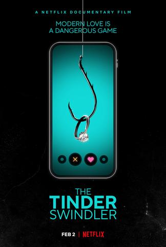
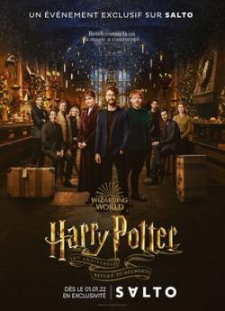
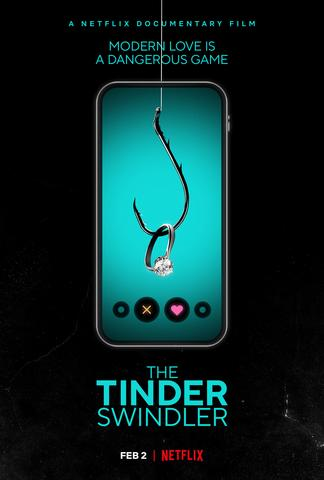
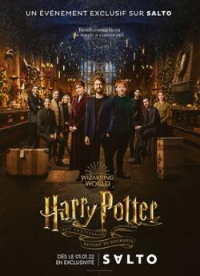
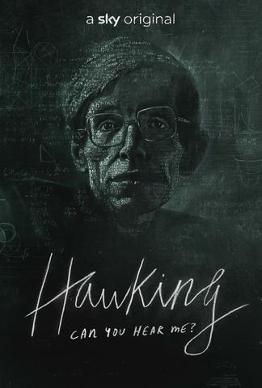
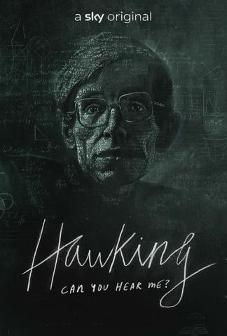
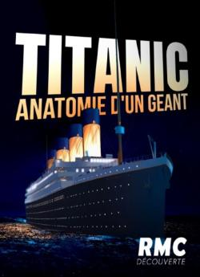
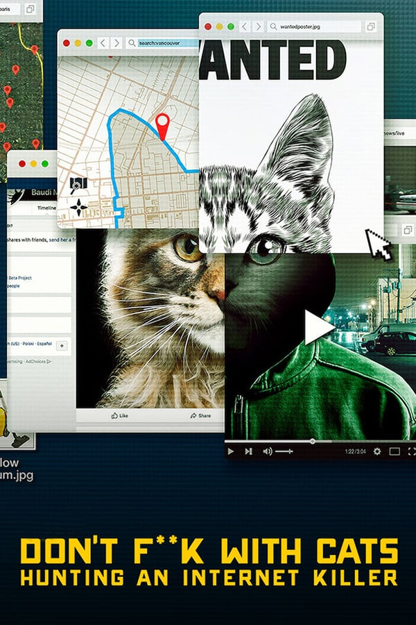
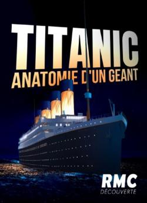
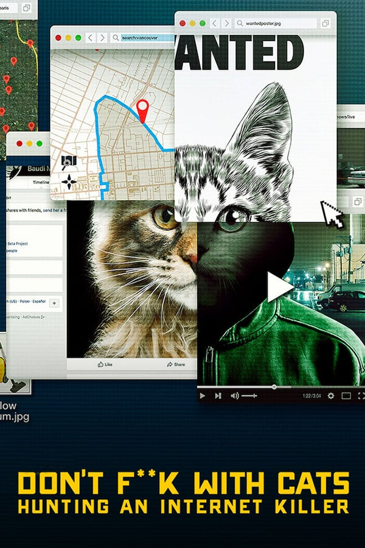

Documentaires Disponibles
 



 


 



Le fast-food est partout. 37% des adolescents américains ont un problème de poids. Deux adultes sur trois sont atteints de surcharge pondérale ou d'obésité. Comment l'Amérique est devenue aussi grosse? Pour mener son enquête, Morgan Spurlock a traversé les Etats-Unis et interrogé des spécialistes dans plus de vingt villes. Mais le fil rouge du documentaire est une expérience que Morgan Spurlock décide de mener sur lui-même. Sous la surveillance attentive de trois médecins, le voilà donc au régime MacMuffin, Big Mac, Royal Cheese, frites et coca.
Réalisateur(s) : Morgan Spurlock
Acteur(s) : Morgan Spurlock; Alexandra Jamieson; Stephen Siegel
Genre : Film; Documentaire
Durée : 1h 40min (100min)
14 Avril 1912, le Titanic sombre dans les eaux glacées de l'Atlantique Nord. Mais au-delà du célèbre naufrage, il est une aventure plus méconnue, et pourtant tout aussi incroyable que son destin légendaire: sa construction. 110 ans après la tragédie, ce documentaire revient sur la genèse du plus mythique paquebot de tous les temps. Jamais un tel navire n'avait été imaginé, aussi grand et luxueux.
Réalisateur(s) : Nicolas Breneol
Genre : Film; Documentaire
Durée : 1h (60min)
20 ans après la sortie du 1er volet de la saga Harry Potter au cinéma, les acteurs se réunissent pour rendre hommage à tous ceux dont la vie a été touchée par ce phénomène culturel.
Réalisateur(s) : Eran Creevy
Genre : Film; Documentaire
Durée : 1h 30min (90min)
Il a courtisé des femmes en ligne en se faisant passer pour un riche magnat, avant de leur extorquer des millions de dollars. Aujourd'hui, certaines veulent se venger.
Réalisateur(s) : Felicity Morris
Genre : Film; Documentaire
Durée : 1h 50min (110min)
Synonyme d'anonymat et d'exploitation, un réseau d'espaces de chat est le théâtre de nombreux crimes sexuels. La traque de ses opérateurs nécessitera courage et ténacité.
Réalisateur(s) : Choi Jin-sung
Genre : Film; Documentaire
Durée : 1h 45min (105min)
Le film est un portait cinématographique unique, moderne et exaltant d’une reine hors normes mais aussi d’une femme : touchante, espiègle, insaisissable. Réalisé par Roger Michell, ce film inédit offre un regard original sur son règne à la longévité inégalée qui a profondément marqué l’histoire des XX et XXI siècles.
Réalisateur(s) : Roger Mitchell
Genre : Film; Documentaire
Durée : 1h 30min (90min)
Documentaire Sky Original explorant la remarquable histoire humaine de Stephen Hawking, alors que sa famille, ses amis et ses collègues parlent franchement pour la première fois de sa vie.
Réalisateur(s) : Oliver Twinch
Genre : Film; Documentaire
Durée : 1h 40min (100min)
Quand la vidéo d'un mystérieux inconnu en train de trucider des chatons fait le tour du Web, des internautes du monde entier passent à l'action pour trouver le coupable. Exalté par l'attention qu'il reçoit, le tortionnaire continue à poster des vidéos encore plus dérangeantes et va même jusqu'à commettre un meurtre.
Réalisateur(s) : Inconu
Genre : Film; Documentaire
Durée : 60min
FLCorp© | FLC Flix® 2022